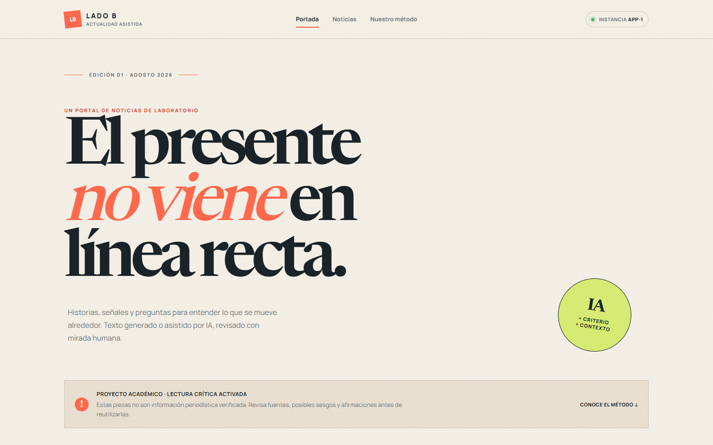
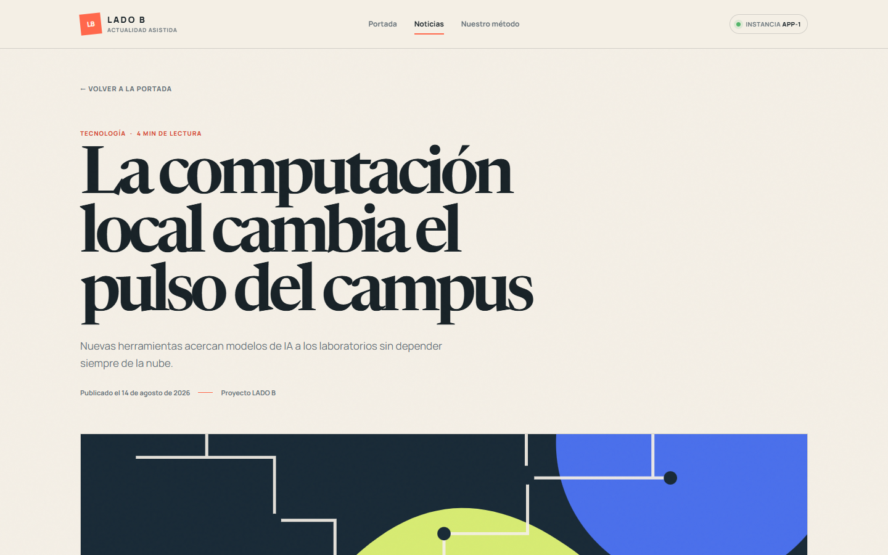
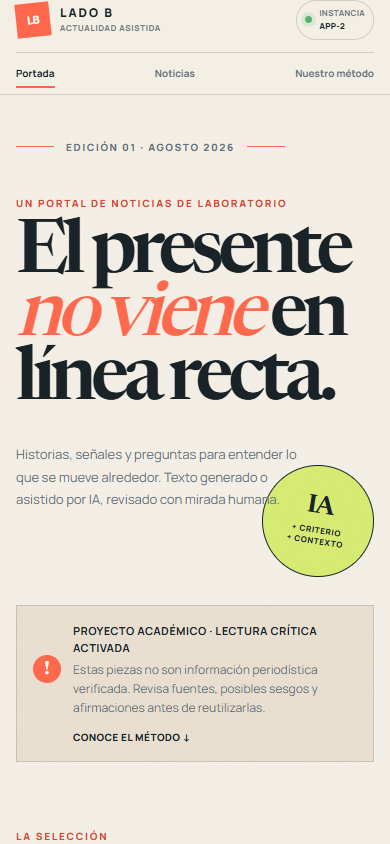

Evidencias de implementación · 18 de agosto de 2026
Proyecto académico con generación de contenido asistida por IA, Docker Compose, NGINX y balanceo de carga.
01 · Resultados automatizados
8080:80./, /noticias, detalle, API y /nginx-status respondieron con HTTP 200.X-App-Instance.| Prueba | Comando | Resultado |
|---|---|---|
| Build e inicio | docker compose up --build -d | Imagen construida y 3 servicios iniciados |
| Validación Bash | sh scripts/verify.sh | OK: rutas, 12 respuestas, atribución y aviso |
| Validación Windows | ./scripts/verify.ps1 | OK: rutas, 12 respuestas, atribución y aviso |
| Continuidad | docker compose stop app-1 | OK: tráfico atendido por app-2 |
| Responsive | Playwright 1440px / 390px | 6 tarjetas, sin overflow horizontal |
02 · Interfaz

Portada en escritorio: seis noticias, filtros, aviso académico e identificación de instancia.

Detalle: título, fecha, categoría, imagen, resumen, contenido, ficha editorial y atribución a ChatGPT.
03 · Adaptabilidad

Viewport 390 × 844: layout responsive, seis tarjetas y sin desbordamiento horizontal.
docker compose up --build -d y abrir http://localhost:8080. Los pasos del failover y del video están en README.md y docs/guion-video.md.